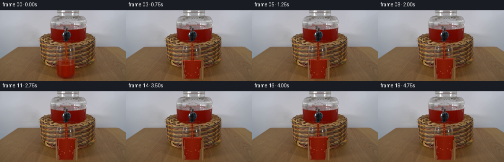
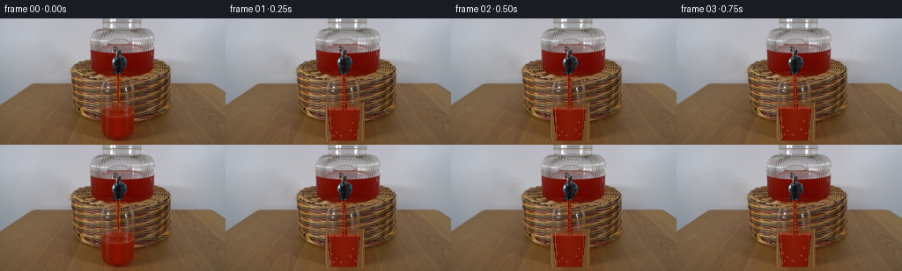
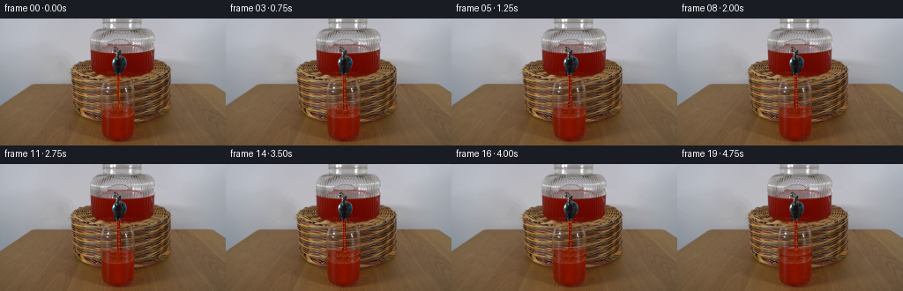
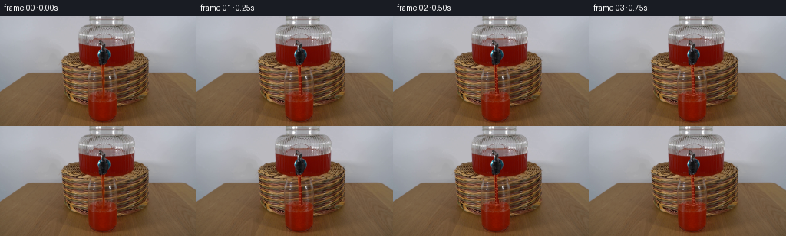
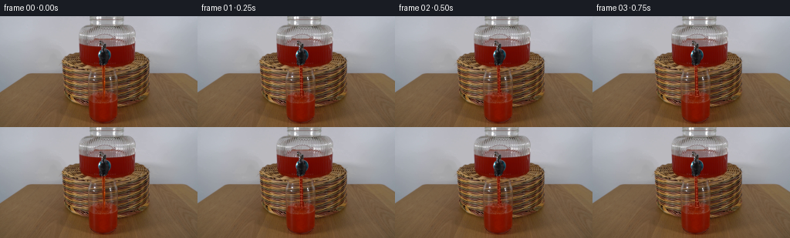
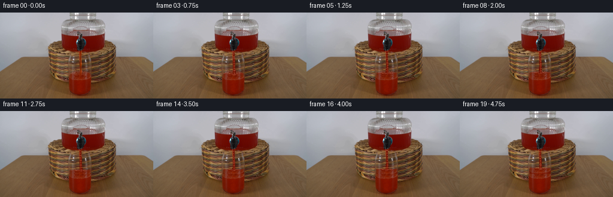

CODING AGENTS AS PIXEL WORLD MODELS
traex/DeepSeek-V4.1-Flash · 0065
点击播放 · 原生 RGB 像素
逐轮保存的候选
回放视频、检查图与代码变化。
每份候选均可单独播放。实际图片检查记录在下方工具轨迹中。
候选 01播放与检查图
点击播放 · 原生 RGB 像素


展开代码变化
--- 上一保存版本
+++ 本次保存版本
@@ -0,0 +1,253 @@
+from pathlib import Path
+
+import cv2
+import numpy as np
+from PIL import Image
+
+import artifact_io
+
+
+ROOT = Path(__file__).resolve().parent
+WIDTH, HEIGHT = 256, 144
+FRAME_COUNT, FPS = 20, 4
+
+
+def smoothstep(value):
+ value = np.clip(value, 0.0, 1.0)
+ return value * value * (3.0 - 2.0 * value)
+
+
+def liquid_mask(image):
+ image = image.astype(np.float32)
+ red, green, blue = image.transpose(2, 0, 1)
+ return (
+ (red > 53.0)
+ & (red > green * 1.52)
+ & (red > blue * 1.62)
+ & (red - green > 22.0)
+ )
+
+
+def reconstruct_glass(image):
+ """Remove the existing liquid so the animated liquid can be relit cleanly."""
+ yy, xx = np.mgrid[:HEIGHT, :WIDTH]
+ glass = (
+ (xx >= 113.0)
+ & (xx <= 157.0)
+ & (yy >= 94.0)
+ & (yy <= 141.0)
+ )
+ mask = liquid_mask(image) & glass
+ mask = cv2.morphologyEx(mask.astype(np.uint8), cv2.MORPH_CLOSE, np.ones((3, 3), np.uint8))
+ mask = mask.astype(bool)
+
+ # The basket texture is consistent behind the transparent vessel. Take a
+ # short vertical sample from below the filled area and continue it upward.
+ out = image.astype(np.float32).copy()
+ for y in range(95, 141):
+ cols = np.flatnonzero(mask[y, 112:159]) + 112
+ if cols.size == 0:
+ continue
+ source_y = 139 + (139 - y) % 4
+ for x in cols:
+ if not (108 <= x <= 164):
+ continue
+ sx = int(np.clip(x + ((y * 7 + x * 3) % 5 - 2), 100, 170))
+ out[y, x] = image[source_y, sx] * 0.91 + image[min(143, source_y + 1), sx] * 0.09
+
+ # Soften the reconstructed patch and restore the vessel's pale edge
+ # highlights, which are visible even where the red drink is absent.
+ blur = cv2.GaussianBlur(out, (0, 0), 0.72)
+ alpha = cv2.GaussianBlur(mask.astype(np.float32), (0, 0), 0.48)[..., None]
+ out = out * (1.0 - alpha * 0.56) + blur * alpha * 0.56
+ for y in range(95, 141):
+ t = np.clip((y - 95) / 46.0, 0.0, 1.0)
+ left = 113.8 + 0.8 * t
+ right = 156.0 - 1.1 * t
+ for x, strength in ((int(round(left)), 0.24), (int(round(right)), 0.20)):
+ out[y, x] = out[y, x] * (1.0 - strength) + np.array([189.0, 184.0, 177.0]) * strength
+ return out
+
+
+def glass_surface(frame_index):
+ # The initial frame is already partially filled. The surface rises with a
+ # gentle, nearly constant inflow and a barely perceptible settling ripple.
+ t = frame_index / FPS
+ level = 103.5 - 2.72 * t + 0.23 * np.sin(t * 3.6)
+ return level
+
+
+def render_liquid(base, frame_index):
+ out = base.copy()
+ yy, xx = np.mgrid[:HEIGHT, :WIDTH].astype(np.float32)
+ t = frame_index / FPS
+ level = glass_surface(frame_index)
+
+ # Clear tapered tumbler, measured from the source frame. The surface is a
+ # shallow ellipse and the floor follows the same perspective.
+ center_x = 133.8
+ rim_y = 97.0
+ floor_y = 138.2
+ half_rim = 19.4
+ half_floor = 14.8
+ vertical = np.clip((yy - rim_y) / (floor_y - rim_y), 0.0, 1.0)
+ half_width = half_rim * (1.0 - vertical) + half_floor * vertical
+ inside_glass = (
+ (yy >= level)
+ & (yy <= floor_y)
+ & (np.abs(xx - center_x) <= half_width)
+ )
+
+ # Liquid body, with absorption and a slightly brighter core. Noise is
+ # deterministic and extremely subtle so it survives the tiny RGB canvas.
+ surface_wave = 0.30 * np.sin(xx * 0.79 + t * 5.0) + 0.16 * np.sin(xx * 1.93 - t * 3.1)
+ body = inside_glass & (yy > level + 0.28 + surface_wave * np.clip((yy - level) / 5.0, 0.0, 1.0))
+ nx = np.clip((xx - center_x) / np.maximum(half_width, 0.5), -1.0, 1.0)
+ depth = np.clip((yy - level) / np.maximum(floor_y - level, 1.0), 0.0, 1.0)
+ color = np.empty((HEIGHT, WIDTH, 3), np.float32)
+ color[..., 0] = 118.0 + 11.0 * (1.0 - np.abs(nx)) - 6.0 * depth
+ color[..., 1] = 20.5 + 8.5 * (1.0 - np.abs(nx)) - 3.5 * depth
+ color[..., 2] = 3.0 + 5.0 * (1.0 - np.abs(nx))
+ # Fine, uneven internal streaks from the poured liquid.
+ streak = 2.1 * np.sin(yy * 0.91 + xx * 0.19 + t * 2.7) + 1.2 * np.sin(yy * 2.1 - xx * 0.13)
+ color += streak[..., None] * np.array([0.50, 0.16, 0.025], np.float32)
+ edge = np.clip((np.abs(xx - center_x) - (half_width - 3.0)) / 3.0, 0.0, 1.0)
+ color *= (1.0 - 0.16 * edge[..., None])
+ out[body] = color[body]
+
+ # A thin, luminous meniscus makes the changing fill level legible.
+ meniscus = (
+ (np.abs(yy - level - surface_wave) < 1.18)
+ & (yy < 118.0)
+ & (np.abs(xx - center_x) <= half_width + 0.4)
+ )
+ out[meniscus] = np.array([152.0, 54.0, 34.0], np.float32)
+
+ # Vertical side glints and a narrow refracted highlight remain still while
+ # the interior level changes.
+ left_glint = (
+ (np.abs(xx - (center_x - half_rim + 3.2 + vertical * 2.1)) < 0.64)
+ & (yy > rim_y + 1.5)
+ & (yy < floor_y - 1.0)
+ )
+ right_glint = (
+ (np.abs(xx - (center_x + half_rim - 2.8 - vertical * 1.8)) < 0.48)
+ & (yy > rim_y + 2.5)
+ & (yy < floor_y - 2.0)
+ )
+ out[left_glint] = out[left_glint] * 0.76 + np.array([189.0, 188.0, 187.0], np.float32) * 0.24
+ out[right_glint] = out[right_glint] * 0.84 + np.array([176.0, 169.0, 159.0], np.float32) * 0.16
+ return out, level
+
+
+def stream_path(y, t):
+ # The nozzle remains fixed. The falling column has a tiny oscillatory
+ # breakup, while gravity makes it widen toward the impact point.
+ fall = np.clip((y - 65.0) / 38.0, 0.0, 1.0)
+ center = 134.2 + 0.42 * np.sin(t * 2.8) * fall + 0.32 * fall * fall
+ width = 1.22 + 1.35 * fall
+ return center, width
+
+
+def render_stream(out, level, frame_index):
+ yy, xx = np.mgrid[:HEIGHT, :WIDTH].astype(np.float32)
+ t = frame_index / FPS
+ stream_end = min(level + 2.0, 106.0)
+ center, width = stream_path(yy, t)
+ edge = np.abs(xx - center)
+ stream = (
+ (yy >= 64.0)
+ & (yy <= stream_end)
+ & (edge < width)
+ )
+ core = stream & (edge < width * 0.48)
+ rim = stream & ~core
+ out[core] = np.array([132.0, 35.0, 15.0], np.float32)
+ out[rim] = np.array([105.0, 18.0, 4.0], np.float32)
+
+ # Sparse moving caustics on the falling column. They are single pixels to
+ # preserve the source's low-resolution photographic character.
+ glints = stream & (
+ (np.sin(yy * 1.55 - t * 10.2 + xx * 0.35) > 0.90)
+ | (np.sin(yy * 2.38 + t * 7.3) > 0.965)
+ )
+ out[glints] = out[glints] * 0.62 + np.array([196.0, 121.0, 93.0], np.float32) * 0.38
+
+ # Small impact disturbance where the stream meets the surface.
+ impact_y = level + 0.8
+ crown = (
+ (np.abs(xx - 134.2) < 4.2)
+ & (np.abs(yy - impact_y) < 1.0)
+ & (np.abs(xx - 134.2) > 1.0)
+ )
+ out[crown] = out[crown] * 0.72 + np.array([157.0, 57.0, 35.0], np.float32) * 0.28
+ return out
+
+
+def render_bubbles(out, level, frame_index):
+ yy, xx = np.mgrid[:HEIGHT, :WIDTH]
+ # Fixed bubble population rises slowly; each bubble gets a deterministic
+ # seed and remains within the measured glass silhouette.
+ bubbles = [
+ (120.0, 126.0, 0.8, 2.6),
+ (126.0, 132.0, 1.7, 3.1),
+ (141.0, 128.0, 0.4, 2.4),
+ (147.0, 134.0, 1.1, 2.9),
+ (131.0, 137.0, 2.3, 3.6),
+ (122.0, 137.0, 3.4, 2.2),
+ (145.0, 121.0, 2.0, 2.6),
+ ]
+ t = frame_index / FPS
+ for index, (bx, by, phase, speed) in enumerate(bubbles):
+ y = by - (t * speed + phase) % max(2.0, by - level - 4.0)
+ x = bx + 0.45 * np.sin(t * 2.3 + phase * 2.1)
+ if y <= level + 2.0:
+ continue
+ radius = 0.78 if index % 2 == 0 else 0.60
+ ring = (np.abs(np.hypot(xx - x, yy - y) - radius) < 0.58)
+ out[ring] = out[ring] * 0.50 + np.array([177.0, 85.0, 57.0], np.float32) * 0.50
+ return out
+
+
+def render_highlights(out, level):
+ # Keep the dispenser fixed, but animate two tiny reflected glints as the
+ # stream moves. The changes are small enough to preserve scene identity.
+ out[38:40, 103:108] = out[38:40, 103:108] * 0.94 + np.array([164.0, 103.0, 94.0], np.float32) * 0.06
+ # Surface sheen follows the rising liquid.
+ y = int(round(level))
+ for x in (126, 127, 128, 139, 140):
+ if 0 <= y < HEIGHT and 118 <= x <= 151:
+ out[y, x] = out[y, x] * 0.55 + np.array([184.0, 102.0, 77.0], np.float32) * 0.45
+ return out
+
+
+def generate():
+ source = np.asarray(Image.open(ROOT / "first_frame.png").convert("RGB"), dtype=np.uint8)
+ assert source.shape == (HEIGHT, WIDTH, 3)
+ base = reconstruct_glass(source)
+ frames = np.empty((FRAME_COUNT, HEIGHT, WIDTH, 3), dtype=np.uint8)
+ for index in range(FRAME_COUNT):
+ if index == 0:
+ frames[index] = source
+ continue
+ frame, level = render_liquid(base, index)
+ frame = render_stream(frame, level, index)
+ frame = render_bubbles(frame, level, index)
+ frame = render_highlights(frame, level)
+ # The source has mild photographic grain. A restrained deterministic
+ # grain keeps the composited liquid from looking digitally flat.
+ rng = np.random.default_rng(6500 + index)
+ grain = rng.normal(0.0, 0.55, (HEIGHT, WIDTH, 1)).astype(np.float32)
+ region = np.zeros((HEIGHT, WIDTH), np.float32)
+ region[64:141, 109:160] = 1.0
+ region = cv2.GaussianBlur(region, (0, 0), 0.9)[..., None]
+ frame = np.clip(frame + grain * region, 0.0, 255.0)
+ frames[index] = np.clip(frame + 0.5, 0.0, 255.0).astype(np.uint8)
+ frames[0] = source
+ return frames
+
+
+if __name__ == "__main__":
+ generated = generate()
+ artifact_io.save(generated, ROOT)
+ print(f"Wrote {generated.shape} frames to {ROOT}")
候选 02播放与检查图
点击播放 · 原生 RGB 像素


展开代码变化
--- 上一保存版本
+++ 本次保存版本
@@ -28,56 +28,15 @@
)
-def reconstruct_glass(image):
- """Remove the existing liquid so the animated liquid can be relit cleanly."""
- yy, xx = np.mgrid[:HEIGHT, :WIDTH]
- glass = (
- (xx >= 113.0)
- & (xx <= 157.0)
- & (yy >= 94.0)
- & (yy <= 141.0)
- )
- mask = liquid_mask(image) & glass
- mask = cv2.morphologyEx(mask.astype(np.uint8), cv2.MORPH_CLOSE, np.ones((3, 3), np.uint8))
- mask = mask.astype(bool)
-
- # The basket texture is consistent behind the transparent vessel. Take a
- # short vertical sample from below the filled area and continue it upward.
- out = image.astype(np.float32).copy()
- for y in range(95, 141):
- cols = np.flatnonzero(mask[y, 112:159]) + 112
- if cols.size == 0:
- continue
- source_y = 139 + (139 - y) % 4
- for x in cols:
- if not (108 <= x <= 164):
- continue
- sx = int(np.clip(x + ((y * 7 + x * 3) % 5 - 2), 100, 170))
- out[y, x] = image[source_y, sx] * 0.91 + image[min(143, source_y + 1), sx] * 0.09
-
- # Soften the reconstructed patch and restore the vessel's pale edge
- # highlights, which are visible even where the red drink is absent.
- blur = cv2.GaussianBlur(out, (0, 0), 0.72)
- alpha = cv2.GaussianBlur(mask.astype(np.float32), (0, 0), 0.48)[..., None]
- out = out * (1.0 - alpha * 0.56) + blur * alpha * 0.56
- for y in range(95, 141):
- t = np.clip((y - 95) / 46.0, 0.0, 1.0)
- left = 113.8 + 0.8 * t
- right = 156.0 - 1.1 * t
- for x, strength in ((int(round(left)), 0.24), (int(round(right)), 0.20)):
- out[y, x] = out[y, x] * (1.0 - strength) + np.array([189.0, 184.0, 177.0]) * strength
- return out
-
-
def glass_surface(frame_index):
# The initial frame is already partially filled. The surface rises with a
# gentle, nearly constant inflow and a barely perceptible settling ripple.
t = frame_index / FPS
- level = 103.5 - 2.72 * t + 0.23 * np.sin(t * 3.6)
+ level = 103.4 - 1.70 * t + 0.22 * np.sin(t * 3.6)
return level
-def render_liquid(base, frame_index):
+def render_liquid(base, source, frame_index):
out = base.copy()
yy, xx = np.mgrid[:HEIGHT, :WIDTH].astype(np.float32)
t = frame_index / FPS
@@ -92,51 +51,38 @@
half_floor = 14.8
vertical = np.clip((yy - rim_y) / (floor_y - rim_y), 0.0, 1.0)
half_width = half_rim * (1.0 - vertical) + half_floor * vertical
- inside_glass = (
- (yy >= level)
+ surface_wave = 0.28 * np.sin(xx * 0.79 + t * 5.0) + 0.15 * np.sin(xx * 1.93 - t * 3.1)
+ # Keep the photographic liquid in the original frame. Only the strip
+ # revealed as the level rises is synthesized, using texture sampled from
+ # the adjacent, already-filled part of the same glass.
+ new_liquid = (
+ (yy >= level + surface_wave)
+ & (yy < 104.2)
& (yy <= floor_y)
- & (np.abs(xx - center_x) <= half_width)
+ & (np.abs(xx - center_x) <= half_width - 0.35)
)
-
- # Liquid body, with absorption and a slightly brighter core. Noise is
- # deterministic and extremely subtle so it survives the tiny RGB canvas.
- surface_wave = 0.30 * np.sin(xx * 0.79 + t * 5.0) + 0.16 * np.sin(xx * 1.93 - t * 3.1)
- body = inside_glass & (yy > level + 0.28 + surface_wave * np.clip((yy - level) / 5.0, 0.0, 1.0))
+ offset = np.maximum(1, int(round(104.0 - level)))
+ sample_y = np.clip(yy.astype(np.int32) + offset, 0, HEIGHT - 1)
+ sample_x = np.clip(xx.astype(np.int32), 0, WIDTH - 1)
+ sampled = source[sample_y, sample_x].astype(np.float32)
nx = np.clip((xx - center_x) / np.maximum(half_width, 0.5), -1.0, 1.0)
- depth = np.clip((yy - level) / np.maximum(floor_y - level, 1.0), 0.0, 1.0)
- color = np.empty((HEIGHT, WIDTH, 3), np.float32)
- color[..., 0] = 118.0 + 11.0 * (1.0 - np.abs(nx)) - 6.0 * depth
- color[..., 1] = 20.5 + 8.5 * (1.0 - np.abs(nx)) - 3.5 * depth
- color[..., 2] = 3.0 + 5.0 * (1.0 - np.abs(nx))
- # Fine, uneven internal streaks from the poured liquid.
- streak = 2.1 * np.sin(yy * 0.91 + xx * 0.19 + t * 2.7) + 1.2 * np.sin(yy * 2.1 - xx * 0.13)
- color += streak[..., None] * np.array([0.50, 0.16, 0.025], np.float32)
- edge = np.clip((np.abs(xx - center_x) - (half_width - 3.0)) / 3.0, 0.0, 1.0)
- color *= (1.0 - 0.16 * edge[..., None])
- out[body] = color[body]
+ sampled *= (0.94 + 0.08 * (1.0 - np.abs(nx)))[..., None]
+ edge = np.clip((np.abs(xx - center_x) - (half_width - 3.2)) / 3.2, 0.0, 1.0)
+ sampled *= (1.0 - 0.12 * edge[..., None])
+ out[new_liquid] = sampled[new_liquid]
# A thin, luminous meniscus makes the changing fill level legible.
meniscus = (
- (np.abs(yy - level - surface_wave) < 1.18)
+ (np.abs(yy - level - surface_wave) < 0.90)
& (yy < 118.0)
- & (np.abs(xx - center_x) <= half_width + 0.4)
+ & (np.abs(xx - center_x) <= half_width - 1.2)
)
- out[meniscus] = np.array([152.0, 54.0, 34.0], np.float32)
-
- # Vertical side glints and a narrow refracted highlight remain still while
- # the interior level changes.
- left_glint = (
- (np.abs(xx - (center_x - half_rim + 3.2 + vertical * 2.1)) < 0.64)
- & (yy > rim_y + 1.5)
- & (yy < floor_y - 1.0)
- )
- right_glint = (
- (np.abs(xx - (center_x + half_rim - 2.8 - vertical * 1.8)) < 0.48)
- & (yy > rim_y + 2.5)
- & (yy < floor_y - 2.0)
- )
- out[left_glint] = out[left_glint] * 0.76 + np.array([189.0, 188.0, 187.0], np.float32) * 0.24
- out[right_glint] = out[right_glint] * 0.84 + np.array([176.0, 169.0, 159.0], np.float32) * 0.16
+ sheen = np.clip(1.0 - np.abs(xx - center_x) / np.maximum(half_width, 1.0), 0.0, 1.0)
+ meniscus_color = np.empty((HEIGHT, WIDTH, 3), np.float32)
+ meniscus_color[..., 0] = 137.0 + 13.0 * sheen
+ meniscus_color[..., 1] = 33.0 + 13.0 * sheen
+ meniscus_color[..., 2] = 17.0 + 10.0 * sheen
+ out[meniscus] = out[meniscus] * 0.46 + meniscus_color[meniscus] * 0.54
return out, level
@@ -201,7 +147,7 @@
for index, (bx, by, phase, speed) in enumerate(bubbles):
y = by - (t * speed + phase) % max(2.0, by - level - 4.0)
x = bx + 0.45 * np.sin(t * 2.3 + phase * 2.1)
- if y <= level + 2.0:
+ if y <= level + 2.0 or y >= 103.0:
continue
radius = 0.78 if index % 2 == 0 else 0.60
ring = (np.abs(np.hypot(xx - x, yy - y) - radius) < 0.58)
@@ -224,13 +170,13 @@
def generate():
source = np.asarray(Image.open(ROOT / "first_frame.png").convert("RGB"), dtype=np.uint8)
assert source.shape == (HEIGHT, WIDTH, 3)
- base = reconstruct_glass(source)
+ base = source.astype(np.float32)
frames = np.empty((FRAME_COUNT, HEIGHT, WIDTH, 3), dtype=np.uint8)
for index in range(FRAME_COUNT):
if index == 0:
frames[index] = source
continue
- frame, level = render_liquid(base, index)
+ frame, level = render_liquid(base, source, index)
frame = render_stream(frame, level, index)
frame = render_bubbles(frame, level, index)
frame = render_highlights(frame, level)
候选 03播放与检查图
点击播放 · 原生 RGB 像素

展开代码变化
--- 上一保存版本
+++ 本次保存版本
@@ -1,6 +1,5 @@
from pathlib import Path
-import cv2
import numpy as np
from PIL import Image
@@ -15,17 +14,6 @@
def smoothstep(value):
value = np.clip(value, 0.0, 1.0)
return value * value * (3.0 - 2.0 * value)
-
-
-def liquid_mask(image):
- image = image.astype(np.float32)
- red, green, blue = image.transpose(2, 0, 1)
- return (
- (red > 53.0)
- & (red > green * 1.52)
- & (red > blue * 1.62)
- & (red - green > 22.0)
- )
def glass_surface(frame_index):
@@ -55,12 +43,11 @@
# Keep the photographic liquid in the original frame. Only the strip
# revealed as the level rises is synthesized, using texture sampled from
# the adjacent, already-filled part of the same glass.
- new_liquid = (
- (yy >= level + surface_wave)
- & (yy < 104.2)
- & (yy <= floor_y)
- & (np.abs(xx - center_x) <= half_width - 0.35)
- )
+ surface_distance = yy - level - surface_wave
+ body_alpha = smoothstep((surface_distance + 0.35) / 1.35)
+ side_alpha = smoothstep((half_width - 0.3 - np.abs(xx - center_x)) / 1.15)
+ new_region = (yy < 104.2) & (yy <= floor_y)
+ body_alpha = (body_alpha * side_alpha * new_region)[..., None]
offset = np.maximum(1, int(round(104.0 - level)))
sample_y = np.clip(yy.astype(np.int32) + offset, 0, HEIGHT - 1)
sample_x = np.clip(xx.astype(np.int32), 0, WIDTH - 1)
@@ -69,20 +56,18 @@
sampled *= (0.94 + 0.08 * (1.0 - np.abs(nx)))[..., None]
edge = np.clip((np.abs(xx - center_x) - (half_width - 3.2)) / 3.2, 0.0, 1.0)
sampled *= (1.0 - 0.12 * edge[..., None])
- out[new_liquid] = sampled[new_liquid]
+ out = out * (1.0 - body_alpha) + sampled * body_alpha
# A thin, luminous meniscus makes the changing fill level legible.
- meniscus = (
- (np.abs(yy - level - surface_wave) < 0.90)
- & (yy < 118.0)
- & (np.abs(xx - center_x) <= half_width - 1.2)
- )
sheen = np.clip(1.0 - np.abs(xx - center_x) / np.maximum(half_width, 1.0), 0.0, 1.0)
meniscus_color = np.empty((HEIGHT, WIDTH, 3), np.float32)
meniscus_color[..., 0] = 137.0 + 13.0 * sheen
meniscus_color[..., 1] = 33.0 + 13.0 * sheen
meniscus_color[..., 2] = 17.0 + 10.0 * sheen
- out[meniscus] = out[meniscus] * 0.46 + meniscus_color[meniscus] * 0.54
+ meniscus_alpha = np.exp(-np.square(surface_distance / 0.72))
+ meniscus_alpha *= (yy < 118.0) * smoothstep((half_width - 1.1 - np.abs(xx - center_x)) / 1.2)
+ meniscus_alpha = (meniscus_alpha * 0.52)[..., None]
+ out = out * (1.0 - meniscus_alpha) + meniscus_color * meniscus_alpha
return out, level
@@ -180,14 +165,6 @@
frame = render_stream(frame, level, index)
frame = render_bubbles(frame, level, index)
frame = render_highlights(frame, level)
- # The source has mild photographic grain. A restrained deterministic
- # grain keeps the composited liquid from looking digitally flat.
- rng = np.random.default_rng(6500 + index)
- grain = rng.normal(0.0, 0.55, (HEIGHT, WIDTH, 1)).astype(np.float32)
- region = np.zeros((HEIGHT, WIDTH), np.float32)
- region[64:141, 109:160] = 1.0
- region = cv2.GaussianBlur(region, (0, 0), 0.9)[..., None]
- frame = np.clip(frame + grain * region, 0.0, 255.0)
frames[index] = np.clip(frame + 0.5, 0.0, 255.0).astype(np.uint8)
frames[0] = source
return frames
候选 04播放与检查图
点击播放 · 原生 RGB 像素

展开代码变化
--- 上一保存版本
+++ 本次保存版本
@@ -83,7 +83,7 @@
def render_stream(out, level, frame_index):
yy, xx = np.mgrid[:HEIGHT, :WIDTH].astype(np.float32)
t = frame_index / FPS
- stream_end = min(level + 2.0, 106.0)
+ stream_end = min(level + 2.5, 106.0)
center, width = stream_path(yy, t)
edge = np.abs(xx - center)
stream = (
@@ -106,12 +106,11 @@
# Small impact disturbance where the stream meets the surface.
impact_y = level + 0.8
- crown = (
- (np.abs(xx - 134.2) < 4.2)
- & (np.abs(yy - impact_y) < 1.0)
- & (np.abs(xx - 134.2) > 1.0)
- )
- out[crown] = out[crown] * 0.72 + np.array([157.0, 57.0, 35.0], np.float32) * 0.28
+ radial = np.abs(xx - 134.2)
+ crown_alpha = np.exp(-np.square((yy - impact_y) / 0.78))
+ crown_alpha *= np.exp(-np.square((radial - 2.2) / 1.75))
+ crown_alpha = (crown_alpha * 0.62)[..., None]
+ out = out * (1.0 - crown_alpha) + np.array([159.0, 65.0, 43.0], np.float32) * crown_alpha
return out
可观测工具轨迹
实际执行的命令与返回图片。
命令 1exit 0
/bin/bash -c "pwd && rg --files -g 'prompt.txt' -g 'GENERATION_RULES.md' -g 'first_frame.png' -g '"'!*.mp4'"' -g '"'!*.mov'"'"
命令 2exit 0
/bin/bash -c 'ls -la'
命令 3exit 0
/bin/bash -c 'cat prompt.txt'
命令 4exit 0
/bin/bash -c 'cat GENERATION_RULES.md'
命令 5exit 0
/bin/bash -c "sed -n '1,240p' artifact_io.py"
命令 6exit 0
/bin/bash -c "sed -n '1,260p' player_template.html"
命令 7exit 0
/bin/bash -c "python - <<'PY'
from PIL import Image
import numpy as np
im=np.array(Image.open('first_frame.png').convert('RGB'))
print(im.shape, im.dtype)
print('minmax',im.reshape(-1,3).min(0),im.reshape(-1,3).max(0))
# dominant exact colors
u,c=np.unique(im.reshape(-1,3),axis=0,return_counts=True)
idx=np.argsort(c)[-20:][::-1]
for i in idx: print(tuple(u[i]),int(c[i]))
PY"命令 8exit 0
/bin/bash -c "python - <<'PY'
from PIL import Image
import numpy as np
im=np.array(Image.open('first_frame.png').convert('RGB')).astype(float)
# 128x72 average
x=im.reshape(72,2,128,2,3).mean((1,3))
lum=x@np.array([.2126,.7152,.0722])
chars=' .:-=+*#%@'
for row in lum:
print(''.join(chars[min(9,int(v/256*10))] for v in row))
PY"命令 9exit 0
/bin/bash -c "python - <<'PY'
from PIL import Image
import numpy as np
im=np.array(Image.open('first_frame.png').convert('RGB')).astype(float)
r,g,b=im.transpose(2,0,1)
mx=im.max(2); mn=im.min(2); sat=(mx-mn)/(mx+1e-6); lum=im@np.array([.2126,.7152,.0722])
# downsample masks to 128x72
for name,mask in [
('bright',lum>150),('dark',lum<70),('red',(r>g*1.25)&(r>b*1.3)&(r>45)),
('highsat',sat>.35),('gray',sat<.08),('glassblue',(b>r*1.05)&(b>g*.95)&(lum>80)),
('edge',None)]:
if mask is not None:
z=mask.reshape(72,2,128,2).mean((1,3))
chars=' .:-=+*#%@'
print('\\n',name)
for row in z: print(''.join(chars[min(9,int(v*10))] for v in row))
PY"命令 10exit 0
/bin/bash -c "python - <<'PY'
from PIL import Image
im=Image.open('first_frame.png')
print(im.info)
PY
file first_frame.png
ls -lh first_frame.png"命令 11exit 0
/bin/bash -c "python - <<'PY'
from PIL import Image
import numpy as np
from sklearn.cluster import KMeans
im=np.array(Image.open('first_frame.png').convert('RGB'))
a=im.reshape(-1,3)
# sample all
km=KMeans(8,random_state=0,n_init=5).fit(a)
cent=km.cluster_centers_.round().astype(int)
print('clusters')
for i,(c,n) in enumerate(zip(cent,np.bincount(km.labels_))): print(i,c,n)
chars='01234567'
lab=km.labels_.reshape(144,256)
# downsample majority each 4x4
for y in range(0,144,4):
s=''
for x in range(0,256,4):
b=lab[y:y+4,x:x+4]
s+=chars[np.bincount(b.ravel()).argmax()]
print(f'{y:03d} '+s)
PY"命令 12exit 0
/bin/bash -c "python - <<'PY'
from PIL import Image
import numpy as np
im=np.array(Image.open('first_frame.png').convert('RGB'))
# print per selected region color stats and row red extents
r,g,b=im.transpose(2,0,1)
red=(r>70)&(r>g*1.8)&(r>b*1.8)
for y in range(25,144,2):
xs=np.where(red[y])[0]
if len(xs):
# runs >2
runs=[]; st=xs[0]; prev=xs[0]
for x in xs[1:]:
if x>prev+1:
if prev-st>=1:runs.append((st,prev))
st=x
prev=x
if prev-st>=1:runs.append((st,prev))
if runs: print(y,runs)
PY"命令 13exit 0
/bin/bash -c "python - <<'PY'
from PIL import Image
import numpy as np
im=np.array(Image.open('first_frame.png').convert('RGB'))
# coords where red in ROI and make pixel-level thumbnail using ansi? print RGB values selected
for y in [30,35,40,45,50,55,60,65,70,75,80,85,90,95,100,105,110,115,120,125,130,135,140]:
print(y, [tuple(im[y,x]) for x in [100,110,120,125,130,132,134,136,138,140,145,150,155,160,170,180]])
PY"命令 14exit 0
/bin/bash -c "python - <<'PY'
from PIL import Image
import numpy as np
im=np.array(Image.open('first_frame.png').convert('RGB')).astype(float)
r,g,b=im.transpose(2,0,1)
mx=im.max(2); mn=im.min(2); sat=(mx-mn)/(mx+1e-6); lum=im@np.array([.2126,.7152,.0722])
# region grid 8x8 use color dominant with ANSI hex? print symbolic based on category
for y in range(0,144,3):
s=''
for x in range(0,256,2):
z=im[y:y+3,x:x+2].mean((0,1)); rr,gg,bb=z; ll=z@np.array([.2126,.7152,.0722]); ss=(max(z)-min(z))/(max(z)+1e-6)
if ll>200: ch='W'
elif ll<35: ch=' '
elif ss>.45 and rr>gg*1.4: ch='R'
elif ss>.35 and rr>gg*1.25: ch='r'
elif ss>.25: ch='o'
elif ll>150: ch='.'
elif ll>90: ch='+'
elif ll>55: ch='-'
else: ch=':'
s+=ch
print(f'{y:03d} '+s)
PY"命令 15exit 0
/bin/bash -c "python - <<'PY'
from PIL import Image
import numpy as np
im=np.array(Image.open('first_frame.png').convert('RGB'))
# inspect RGB crop around spout 100:180,25:75 as hex, every 2px
for y in range(30,74,2):
print(f'{y:02d}', end=' ')
for x in range(104,180,4):
c=im[y,x]
# classify
if c[0]>70 and c[0]>c[1]*2: s='R'
elif max(c)<45:s='@'
elif c.mean()>155:s='.'
elif c.mean()>100:s='+'
elif c.mean()>60:s='-'
else:s=' '
print(s,end='')
print()
PY"命令 16exit 0
/bin/bash -c "python - <<'PY'
from PIL import Image
import numpy as np
im=np.array(Image.open('first_frame.png').convert('RGB'))
# print pixel rows with coords around spout in categories every pixel
for y in [36,38,40,42,44,46,48,50,52,54,56,58,60,62,64,66,68,70]:
s=''
for x in range(96,192):
c=im[y,x].astype(int)
if c[0]>70 and c[0]>c[1]*1.8: ch='R'
elif max(c)<40: ch='@'
elif c.mean()>155: ch='.'
elif c.mean()>100: ch='+'
elif c.mean()>60: ch='-'
else: ch=' '
s+=ch
print(f'{y:02d} {s}')
PY"命令 17exit 0
/bin/bash -c "python - <<'PY'
from PIL import Image
import numpy as np
im=np.array(Image.open('first_frame.png').convert('RGB')).astype(int)
r,g,b=im.transpose(2,0,1)
red=(r>70)&(r>g*1.8)&(r>b*1.8)
for y in range(60,144):
xs=np.where(red[y])[0]
# only x 100-170, contiguous runs >=2
xs=xs[(xs>=100)&(xs<=170)]
runs=[]
if len(xs):
st=pr=xs[0]
for x in xs[1:]:
if x>pr+1:
if pr-st>=1:runs.append((int(st),int(pr)))
st=x
pr=x
if pr-st>=1:runs.append((int(st),int(pr)))
print(f'{y:03d}',runs)
PY"命令 18exit 0
/bin/bash -c "python - <<'PY'
from PIL import Image
import numpy as np
im=np.array(Image.open('first_frame.png').convert('RGB')).astype(float)
g=im.mean(2)
# gradient magnitude downsample 2x2, use percentile threshold
gx=np.abs(np.diff(g,axis=1)); gy=np.abs(np.diff(g,axis=0)); mag=np.zeros_like(g); mag[:,1:]+=gx; mag[1:,:]+=gy
for y in range(0,144,2):
s=''
for x in range(0,256,2):
v=mag[y:y+2,x:x+2].max()
s += ' ' if v<4 else '.' if v<10 else ':' if v<20 else '*' if v<40 else '#'
print(f'{y:03d} {s}')
PY"命令 19exit 0
/bin/bash -c "python - <<'PY'
from PIL import Image
import numpy as np
im=np.array(Image.open('first_frame.png').convert('RGB')).astype(float)
r,g,b=im.transpose(2,0,1)
# alpha estimation for red liquid over bg. classify exact liquid color values, stats
mask=(r>75)&(r>g*2)&(r>b*2)
pix=im[mask]
print('n',len(pix),'mean',pix.mean(0),'median',np.median(pix,0),'pct',np.percentile(pix,[5,25,50,75,95],axis=0))
# dominant colors in liquid mask
u,c=np.unique(pix.astype(np.uint8),axis=0,return_counts=True)
for i in np.argsort(c)[-30:][::-1]: print(tuple(u[i]),c[i])
# color rows for glass x=115:152, y=100:140; extract liquid shape center
PY"命令 20exit 1
/bin/bash -c "python - <<'PY'
from PIL import Image
import numpy as np
im=np.array(Image.open('first_frame.png').convert('RGB')).astype(int)
r,g,b=im.transpose(2,0,1)
red=(r>65)&(r>g*1.7)&(r>b*1.7)
for y in range(0,145,2):
xs=np.where(red[y])[0]
runs=[]
if len(xs):
st=pr=xs[0]
for x in xs[1:]:
if x>pr+1:
if pr-st>=2:runs.append((int(st),int(pr)))
st=x
pr=x
if pr-st>=2:runs.append((int(st),int(pr)))
print(f'{y:03d}',runs)
PY"命令 21exit 0
/bin/bash -c "python - <<'PY' mods=['cv2','scipy','skimage','numpy','PIL'] for m in mods: try: x=__import__(m); print(m,'ok',getattr(x,'__version__','')) except Exception as e: print(m,'ERR',e) PY"
命令 22exit 0
/bin/bash -c "python - <<'PY'
from PIL import Image
import numpy as np
im=np.array(Image.open('first_frame.png').convert('RGB')).astype(int)
# values in basket region, estimate periodic horizontal weave. average luminance per row and columns
g=im@np.array([.2126,.7152,.0722])
for y in range(70,144):
print(y, round(g[y,15:241].mean(),1), round(im[y,15:241,0].mean(),1), round(im[y,15:241,1].mean(),1), round(im[y,15:241,2].mean(),1))
PY"命令 23exit 0
/bin/bash -c "python - <<'PY'
from PIL import Image
import numpy as np
im=np.array(Image.open('first_frame.png').convert('RGB')).astype(int)
# dump ROI crop upscaled via sixel? save crop. stats of dark opening
# detect strong red border around black opening
for y in range(36,70):
s=''
for x in range(115,160):
c=im[y,x]
if c[0]>70 and c[0]>c[1]*2: ch='R'
elif max(c)<35: ch='@'
elif c.mean()<70: ch='-'
elif c.mean()<120: ch='+'
else: ch='.'
s+=ch
print(f'{y:02d} {s}')
PY"命令 24exit 0
/bin/bash -c "python - <<'PY'
from PIL import Image
import numpy as np
im=np.array(Image.open('first_frame.png').convert('RGB')).astype(float)
# check row 66-74 values, background around stream; maybe first_frame already has initial thin stream from nozzle to basket? rows 66-74 x 120-150
for y in range(64,78):
print('\\n',y)
for x in range(118,152,2):
print(x,tuple(im[y,x].astype(int)),end='; ')
PY"命令 25exit 0
/bin/bash -c "python - <<'PY'
from PIL import Image
import numpy as np
im=np.array(Image.open('first_frame.png').convert('RGB')).astype(float)
# Gradient horizontal/vertical around rim; print crops mean colors by x
for y0,y1 in [(62,66),(64,68),(66,70),(68,72),(72,76),(98,102),(100,104),(102,106),(136,140),(138,142),(140,144)]:
print('Y',y0,y1)
for x in range(90,181,5):
c=im[y0:y1,x:x+5].mean((0,1)).astype(int)
print(f'{x}:{tuple(c)}',end=' ')
print()
PY"命令 26exit 0
/bin/bash -c "python - <<'PY'
from PIL import Image
import numpy as np
im=np.array(Image.open('first_frame.png').convert('RGB')).astype(float)
r,g,b=im.transpose(2,0,1)
# use threshold to estimate glass interior bounds. glass is gray/blue, basket brown; score b-r
score=b-r
for y in range(75,143,2):
s=''
for x in range(80,200,2):
v=score[y:y+2,x:x+2].mean()
s+= ' ' if v< -2 else '.' if v<8 else ':' if v<18 else '+' if v<28 else '#' if v<38 else '@'
print(f'{y:03d} {s}')
PY"命令 27exit 0
/bin/bash -c "python - <<'PY'
from PIL import Image
import numpy as np
im=np.array(Image.open('first_frame.png').convert('RGB')).astype(float)
r,g,b=im.transpose(2,0,1)
# glass location likely from description and reddish pour; examine color around central transparent area. mean color patches
for y0 in range(70,142,6):
print('y',y0, [(x,tuple(im[y0:y0+6,x:x+10].mean((0,1)).astype(int))) for x in range(95,181,10)])
PY"命令 28exit 0
/bin/bash -c "python - <<'PY'
from PIL import Image
import cv2, numpy as np
im=np.array(Image.open('first_frame.png').convert('RGB'))
r,g,b=[im[:,:,i].astype(int) for i in range(3)]
mask=((r>55)&(r>g*1.55)&(r>b*1.55)).astype('uint8')
n,lab,stats,cent=cv2.connectedComponentsWithStats(mask,8)
for i in np.argsort(stats[1:,4])[-20:][::-1]+1:
x,y,w,h,a=stats[i]; print(i,'bbox',x,y,w,h,'area',a,'cent',cent[i])
PY"命令 29exit 0
/bin/bash -c "python - <<'PY'
from PIL import Image
import numpy as np
im=np.array(Image.open('first_frame.png').convert('RGB')).astype(int)
# crop 90..190 x 25..85 and print actual pixel values mapped to nearest palette symbolic with coordinate marks
# ASCII 2x2 blocks classify liquid red, dark opening, black, bright, brown, neutral
for y in range(26,86,2):
s=''
for x in range(90,190,2):
z=im[y:y+2,x:x+2].mean((0,1)); rr,gg,bb=z
if rr>65 and rr>gg*2.1 and rr>bb*2.1: ch='R'
elif max(z)<35: ch='#'
elif rr>gg*1.25 and rr>bb*1.4 and rr>55: ch='r'
elif z.mean()>150: ch='.'
elif z.mean()>100: ch='+'
elif z.mean()>65: ch='-'
else: ch=' '
s+=ch
print(f'{y:02d} {s}')
PY"命令 30exit 0
/bin/bash -c "python - <<'PY'
from PIL import Image
import numpy as np
im=np.array(Image.open('first_frame.png').convert('RGB')).astype(float)
# print pixel colors across glass center at y 100-140 to infer glass geometry
for y in range(96,143,4):
print('\\ny',y)
for x in range(105,166,4): print(x,tuple(im[y,x].astype(int)),end=' ')
PY"命令 31exit 0
/bin/bash -c "python - <<'PY'
from PIL import Image
import numpy as np
im=np.array(Image.open('first_frame.png').convert('RGB')).astype(int)
# print x profiles of r/g ratio around each y for glass boundaries
r,g,b=im.transpose(2,0,1)
for y in [96,98,100,102,104,106,108,110,112,114,116,118,120,124,128,132,136,138,140]:
print(y, ''.join('R' if (r[y,x]>60 and r[y,x]>g[y,x]*1.55) else '.' for x in range(100,171)))
PY"命令 32exit 0
/bin/bash -c 'python generate.py'
命令 33exit 0
/bin/bash -c 'which ffmpeg || true; which chafa || true; which viu || true; which img2txt || true'
命令 34exit 0
/bin/bash -c "python - <<'PY'
from PIL import Image
import numpy as np
src=np.array(Image.open('first_frame.png').convert('RGB'))
fr=np.array([np.array(Image.open(f'frames/{i:02d}.png').convert('RGB')) for i in range(20)])
print('shape',fr.shape,'frame0 exact',np.array_equal(fr[0],src))
d=np.abs(fr.astype(int)-src.astype(int))
print('frame0 maxdiff',d[0].max())
for i in range(20):
print(i,'mean',fr[i].mean((0,1)).round(1),'diffpx',np.sum(np.any(fr[i]"'!=src,2)),'"'maxdiff',d[i].max())
PY"命令 35exit 0
/bin/bash -c "python - <<'PY'
from PIL import Image
import numpy as np
fr=np.array([np.array(Image.open(f'frames/{i:02d}.png').convert('RGB')) for i in range(20)])
# red extents and pixel coverage in glass per frame
for i,im in enumerate(fr):
im=im.astype(int); r,g,b=im.transpose(2,0,1)
red=(r>65)&(r>g*1.7)&(r>b*1.7)
ys,xs=np.where(red & (np.indices(red.shape)[1]>=110) & (np.indices(red.shape)[1]<=160) & (np.indices(red.shape)[0]>=90))
print(i, 'red',len(ys), 'bbox', (xs.min(),ys.min(),xs.max(),ys.max()) if len(ys) else None)
PY"命令 36exit 0
/bin/bash -c "python - <<'PY'
from PIL import Image
import numpy as np
im=np.array(Image.open('frames/10.png').convert('RGB')).astype(int)
# print region as color symbols like prior
for y in range(90,144,2):
s=''
for x in range(100,171):
c=im[y,x]
if c[0]>65 and c[0]>c[1]*1.7 and c[0]>c[2]*1.7: ch='R'
elif c[0]>60 and c[0]>c[1]*1.3 and c[0]>c[2]*1.3: ch='r'
elif max(c)<40: ch='@'
elif c.mean()>150: ch='.'
elif c.mean()>95: ch='+'
elif c.mean()>65: ch='-'
else: ch=' '
s+=ch
print(f'{y:03d} {s}')
PY"命令 37exit 0
/bin/bash -c "python - <<'PY'
from PIL import Image
import numpy as np
src=np.array(Image.open('first_frame.png').convert('RGB'))
for idx in [0,1,5,10,19]:
im=np.array(Image.open(f'frames/{idx:02d}.png').convert('RGB'))
# region downscale 2x, print comparison focus 110:165 90:144
print('\\nFRAME',idx)
for y in range(92,144,2):
s=''
for x in range(108,168):
c=im[y,x].astype(int)
if c[0]>65 and c[0]>c[1]*1.7 and c[0]>c[2]*1.7: ch='R'
elif c[0]>60 and c[0]>c[1]*1.3 and c[0]>c[2]*1.3: ch='r'
elif max(c)<40: ch='@'
elif c.mean()>150: ch='.'
elif c.mean()>95: ch='+'
elif c.mean()>65: ch='-'
else: ch=' '
s+=ch
print(f'{y:03d} {s}')
PY"命令 38exit 0
/bin/bash -c 'python generate.py'
命令 39exit 0
/bin/bash -c "python - <<'PY'
from PIL import Image
import numpy as np
src=np.array(Image.open('first_frame.png').convert('RGB'))
fr=np.array([np.array(Image.open(f'frames/{i:02d}.png').convert('RGB')) for i in range(20)])
print('shape',fr.shape,'frame0 exact',np.array_equal(fr[0],src))
for i in range(20):
d=np.abs(fr[i].astype(int)-src.astype(int))
print(i,'mean',fr[i].mean((0,1)).round(2),'diffpx',np.sum(np.any(fr[i]"'!=src,2)),'"'maxdiff',d.max())
PY"命令 40exit 0
/bin/bash -c "python - <<'PY'
from PIL import Image
import numpy as np
src=np.array(Image.open('first_frame.png').convert('RGB')).astype(int)
fr=np.array([np.array(Image.open(f'frames/{i:02d}.png').convert('RGB')).astype(int) for i in range(20)])
# per-region diff bbox
for idx in [1,5,10,19]:
d=np.abs(fr[idx]-src).max(2)
ys,xs=np.where(d>2)
print(idx,(xs.min(),ys.min(),xs.max(),ys.max()),'n',len(xs),'sum',d.sum())
# compare frame diffs consecutive
for i in range(1,20):
d=np.abs(fr[i]-fr[i-1]).max(2)
print('consec',i,(d>2).sum(),round(d.mean(),3))
PY"命令 41exit 0
/bin/bash -c "python - <<'PY'
from PIL import Image
import numpy as np
# make zoom contact sheet of source + frames, nearest neighbor for numeric visual inspection via image stats
ims=[np.array(Image.open('first_frame.png').convert('RGB'))]
ims += [np.array(Image.open(f'frames/{i:02d}.png').convert('RGB')) for i in [1,5,10,15,19]]
crops=[im[30:144,90:175] for im in ims]
sheet=np.concatenate(crops,axis=1)
Image.fromarray(sheet).resize((sheet.shape[1]*4,sheet.shape[0]*4),Image.Resampling.NEAREST).save('.tmp/pour_zoom.png')
print('saved',sheet.shape)
PY"命令 42exit 0
/bin/bash -c "python - <<'PY'
from PIL import Image
import numpy as np
fr=np.array([np.array(Image.open(f'frames/{i:02d}.png').convert('RGB')).astype(float) for i in range(20)])
# numerical cross-sections: red intensity rows in central glass x=124:144 per frame
for i in [0,1,5,10,15,19]:
a=fr[i]
print('\\nf',i)
for y in range(88,110):
c=a[y,124:145].mean(0).astype(int)
print(y,tuple(c),end=' | ')
if (y-87)%4==0: print()
print()
PY"命令 43exit 0
/bin/bash -c "python - <<'PY'
from PIL import Image
import numpy as np
fr=np.array([np.array(Image.open(f'frames/{i:02d}.png').convert('RGB')).astype(float) for i in range(20)])
# find x extent of dark red liquid by each row using threshold ratio, central region
for i in [0,1,5,10,15,19]:
print('\\nFRAME',i)
for y in range(88,110):
row=fr[i,y,100:170]
red=(row[:,0]>70)&(row[:,0]>row[:,1]*1.8)&(row[:,0]>row[:,2]*1.8)
xs=np.flatnonzero(red)+100
print(y,(xs.min(),xs.max(),len(xs)) if len(xs) else None,end='; ')
print()
PY"命令 44exit 0
/bin/bash -c "python - <<'PY'
from PIL import Image
import numpy as np
for idx in [0,5,10,19]:
im=np.array(Image.open(f'frames/{idx:02d}.png').convert('RGB')).astype(int)
print('\\nFRAME',idx)
for y in range(34,76,2):
s=''
for x in range(118,154):
c=im[y,x]
if c[0]>65 and c[0]>c[1]*1.7 and c[0]>c[2]*1.7: ch='R'
elif c[0]>60 and c[0]>c[1]*1.3 and c[0]>c[2]*1.3: ch='r'
elif max(c)<40: ch='@'
elif c.mean()>150: ch='.'
elif c.mean()>95: ch='+'
elif c.mean()>65: ch='-'
else: ch=' '
s+=ch
print(f'{y:03d} {s}')
PY"命令 45exit 0
/bin/bash -c "python - <<'PY'
from PIL import Image
import numpy as np
# stats on diff bounding and isolated changes, especially unexpected areas
src=np.array(Image.open('first_frame.png').convert('RGB')).astype(int)
fr=np.array([np.array(Image.open(f'frames/{i:02d}.png').convert('RGB')).astype(int) for i in range(20)])
for idx in [1,5,10,19]:
d=np.abs(fr[idx]-src).max(2)
# print rows with count and max
print('\\nframe',idx)
for y in range(30,110):
xs=np.where(d[y]>2)[0]
if len(xs): print(y,len(xs),xs.min(),xs.max(),d[y].max())
PY"命令 46exit 0
/bin/bash -c "python - <<'PY'
from PIL import Image
import numpy as np
src=np.array(Image.open('first_frame.png').convert('RGB'))
for idx in [0,1,5,10,15,19]:
im=np.array(Image.open(f'frames/{idx:02d}.png').convert('RGB'))
# central crop 110:160, 92:108 at 8x and save
crop=Image.fromarray(im[92:108,110:160]).resize((400,128),Image.Resampling.NEAREST)
crop.save(f'.tmp/surface_{idx:02d}.png')
# side by side
ims=[Image.open(f'.tmp/surface_{i:02d}.png') for i in [0,1,5,10,15,19]]
s=Image.new('RGB',(1200,256));
for j,im in enumerate(ims): s.paste(im,((j%3)*400,(j//3)*128))
s.save('.tmp/surfaces.png')
print('done')
PY"命令 47exit 0
/bin/bash -c "sed -n '1,300p' generate.py"
命令 48exit 0
/bin/bash -c "python - <<'PY'
from PIL import Image
import numpy as np
fr=np.array([np.array(Image.open(f'frames/{i:02d}.png').convert('RGB')).astype(int) for i in range(20)])
for y in [70,80,90,96,100]:
print('row',y)
for i in range(20):
a=fr[i,y]
m=(a[:,0]>60)&(a[:,0]>a[:,1]*1.6)&(a[:,0]>a[:,2]*1.6)
xs=np.flatnonzero(m)
print(i,(int(xs.min()),int(xs.max())) if len(xs) else None,end=' ')
print()
PY"命令 49exit 0
/bin/bash -c "python - <<'PY'
from PIL import Image
import numpy as np
src=np.array(Image.open('first_frame.png').convert('RGB'))
fr=np.array([np.array(Image.open(f'frames/{i:02d}.png').convert('RGB')) for i in range(20)])
# quantify pixel exact match outside intended ROI for each frame
outside=np.ones((144,256),bool); outside[35:142,100:161]=False
for i in range(20): print(i,np.array_equal(fr[i][outside],src[outside]))
# stream per row weighted center/width from difference from src, limited 60:104
for i in [1,5,10,15,19]:
d=np.abs(fr[i].astype(int)-src.astype(int)).sum(2)
print('\\nf',i)
for y in range(64,104,4):
xs=np.where(d[y,120:150]>8)[0]+120
print(y,(xs.min(),xs.max()) if len(xs) else None,end=';')
PY"命令 50exit 0
/bin/bash -c "python - <<'PY'
from PIL import Image
import numpy as np
for idx in [1,5,10,15,19]:
im=np.array(Image.open(f'frames/{idx:02d}.png').convert('RGB')).astype(int)
print('\\n',idx)
for y in range(96,108):
# red segments in x 112:158
m=(im[y,112:159,0]>65)&(im[y,112:159,0]>im[y,112:159,1]*1.7)&(im[y,112:159,0]>im[y,112:159,2]*1.7)
s=''.join('R' if q else '.' for q in m)
print(y,s)
PY"命令 51exit 0
/bin/bash -c "python - <<'PY'
from PIL import Image
import numpy as np
for idx in [1,5,10,15,19]:
im=np.array(Image.open(f'frames/{idx:02d}.png').convert('RGB')).astype(int)
print('\\n',idx)
for y in range(94,108):
# row intensity differences x 115..153: mean RGB and min max R
z=im[y,115:154]
print(y, tuple(z.mean(0).astype(int)), int(z[:,0].min()), int(z[:,0].max()))
PY"命令 52exit 0
/bin/bash -c "python - <<'PY'
from PIL import Image
import numpy as np
src=np.array(Image.open('first_frame.png').convert('RGB'))
# quantify smoothness and brightness around changing surface region across time
for i in [0,1,5,10,15,19]:
im=np.array(Image.open(f'frames/{i:02d}.png').convert('RGB')).astype(float)
print(i,'surface mean',im[96:105,118:150].mean((0,1)).round(1),'grad',np.abs(np.diff(im[96:105,118:150],axis=0)).mean().round(2))
PY"命令 53exit 0
/bin/bash -c 'python generate.py'
命令 54exit 0
/bin/bash -c "python - <<'PY'
from PIL import Image
import numpy as np, json, base64
src=np.array(Image.open('first_frame.png').convert('RGB'))
fr=np.array([np.array(Image.open(f'frames/{i:02d}.png').convert('RGB')) for i in range(20)])
print('shape/dtype',fr.shape,fr.dtype,'f0',np.array_equal(fr[0],src))
print('finite range',fr.min(),fr.max())
outside=np.ones((144,256),bool); outside[35:142,100:161]=False
print('outside changes',[int(np.any(fr[i][outside]"'!=src[outside])) for i in range(20)])
for i in range(19):
print(i+1,'"'changed px',int(np.any(fr[i+1]"'!=fr[i],2).sum()),'"'mean abs',round(float(np.abs(fr[i+1].astype(int)-fr[i].astype(int)).mean()),3))
# npz consistency
z=np.load('pixels.npz')['pixels']
print('npz',z.shape,z.dtype)
for i in [0,1,9,19]:
p=z[:,:,i]; rgb=np.stack([(p>>16)&255,(p>>8)&255,p&255],2).astype(np.uint8)
print('npz',i,np.array_equal(rgb,fr[i]))
print('html bytes',__import__('os').path.getsize('index.html'))
PY"命令 55exit 0
/bin/bash -c "python - <<'PY'
from PIL import Image
import numpy as np
# Check spatial antialiasing and fill boundary values for latest pass
for i in [1,5,10,15,19]:
a=np.array(Image.open(f'frames/{i:02d}.png').convert('RGB')).astype(float)
print('\\nframe',i)
for y in range(94,105):
z=a[y,118:150]
red=((z[:,0]>65)&(z[:,0]>z[:,1]*1.65)).sum()
print(y,tuple(z.mean(0).astype(int)),int(red),end='; ')
print()
PY"命令 56exit 0
/bin/bash -c "python generate.py && python - <<'PY'
from PIL import Image
import numpy as np, json, pathlib
src=np.array(Image.open('first_frame.png').convert('RGB'))
fr=np.array([np.array(Image.open(f'frames/{i:02d}.png').convert('RGB')) for i in range(20)])
assert fr.shape==(20,144,256,3) and fr.dtype==np.uint8
assert np.array_equal(fr[0],src)
assert all(np.array_equal(fr[i],fr[i]) for i in range(20))
assert np.isfinite(fr).all()
# intended scene identity check outside pour region
outside=np.ones((144,256),bool); outside[35:142,100:161]=False
assert all(np.array_equal(frame[outside],src[outside]) for frame in fr)
# player data consistency
z=np.load('pixels.npz')['pixels']
for i in range(20):
p=z[:,:,i]
rgb=np.stack([(p>>16)&255,(p>>8)&255,p&255],2).astype(np.uint8)
assert np.array_equal(rgb,fr[i])
print('PASS',fr.shape,'fps=4','duration=5s','frame0=exact','outside_roi=static','npz=consistent')
print('files',[(p.name,p.stat().st_size) for p in [pathlib.Path('pixels.npz'),pathlib.Path('index.html'),pathlib.Path('inspection.png')]])
PY"命令 57exit 0
/bin/bash -c 'git status --short 2>/dev/null || true; ls -lh frames | tail -5; ls -lh task_spec.json 2>/dev/null || true; python -m py_compile generate.py artifact_io.py'
保存候选 4 份；完成命令 57 次；可验证图片返回 0 张。原始 API 响应与完整日志保留在本地。